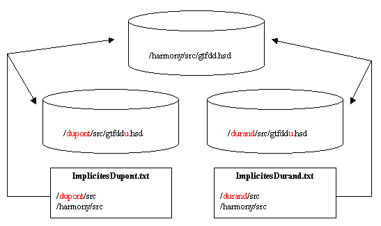

Utilité de la surcharge
Lorsque vous personnalisez (verticalisez) une application vous disposez bien évidemment des dictionnaires de l’application (ccfdd.dhsd pour Divalto Comptabilité par exemple). Vous êtes amené à faire des adaptations et certainement, vous aller ajouter de nouveaux champs dans les tables existantes. Si vous faites la saisie de ces nouveaux champs dans le dictionnaire d’origine, tous ces ajouts seront perdus lorsque vous installerez une nouvelle version de l’application.
La surcharge de dictionnaire vous permet de faire des ajouts dans un dictionnaire en assurant la pérennité de vos modifications tout en facilitant le passage d’une version à l’autre.
Principe de la surcharge
Lorsqu’un dictionnaire est surchargé, toutes les modifications que vous apportez à ce dictionnaire sont stockées dans un autre fichier, appelé « dictionnaire de surcharge ».
Le nom du dictionnaire de surcharge est déduit du nom du dictionnaire surchargé en ajoutant la lettre « u » au nom. Par exemple, la surcharge du dictionnaire ccfdd.dhsd est ccfddu.dhsd.
Lorsque Xwin ou un compilateur charge un dictionnaire, il tente également de charger le dictionnaire de surcharge. La présence ou non du fichier de surcharge détermine donc le fait de savoir si le dictionnaire est surchargé ou non.
Le dictionnaire de surcharge n’est pas forcément dans le même répertoire que le dictionnaire surchargé. Vous devez donc veiller à ce que le dictionnaire de surcharge soit accessible grâce aux chemins implicites liés à votre projet.
Vous pouvez avoir plusieurs dictionnaires de surcharge. Prenons le cas classique d’un développeur qui personnalise Divalto Achats-Ventes pour la société Dupont et également pour la société Durand. Les deux développements sont distincts et le développeur crée un dictionnaire de surcharge pour chacune de ses applications. Lorsqu’il travaille sur le projet Dupont, il charge des chemins implicites qui donnent accès au dictionnaire de surcharge du projet Dupont et lorsqu’il travaille sur le projet Durand il charge d’autres implicites qui donnent accès au dictionnaire de surcharge de Durand.

Surcharges multiples
Harmony permet également de surcharger plusieurs fois un même dictionnaire, on parle alors de surcharges multiples. Cela permet à deux éditeurs différents de développer des Add-ons qui surchargent les mêmes enregistrements et de les installer tous les deux chez un client final.
La gestion des surcharges multiples est décrite en détail dans la documentation Diva au chapitre : <Techniques de programmation><Surcharges multiples>
Voir également :